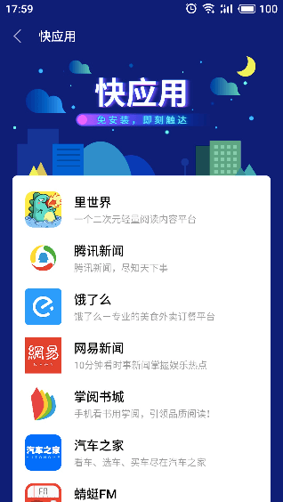
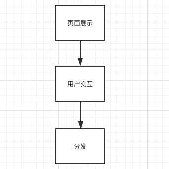
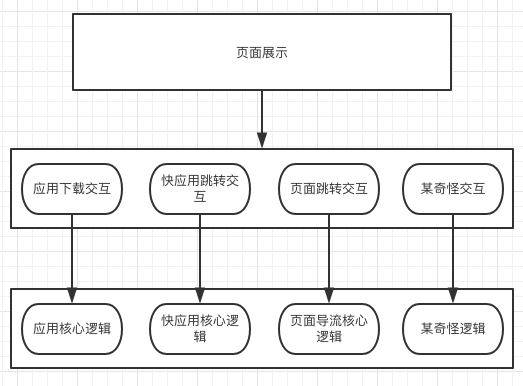
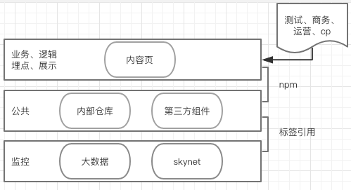
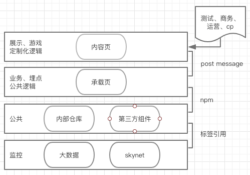
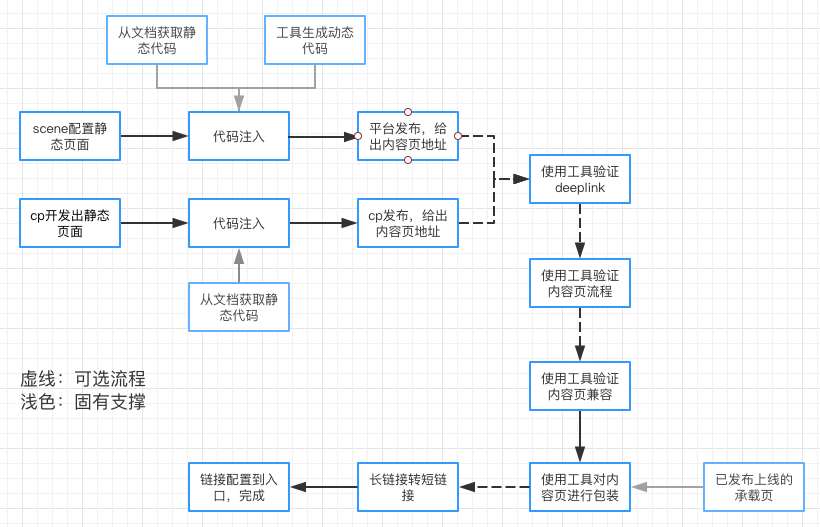

活动可配置化实现
背景
这里与其说是要描述背景，还不如说是要述一述前端业务开发团队之苦，哈哈哈～
有的时候，前端业务团队的需求特点是杂、多、简单、重复性高，而活动可能往往是重灾区。
目前，笔者接触过3种类型的活动，大致如下
- 游戏定制化类型
- 框架固定类型
- 简单定制化类型
第一种的开发难度还是比较大的，涉及到游戏引擎，3D等，可配置化程度较低，也不是本文要讲的内容，就稍微提一下。
第二种就是页面的框架和逻辑基本都是固定的，部分可通过后台进行配置，例如转盘抽奖活动，背景、标题、bannner、奖品等是可以通过后台配置实现定制化的，其它的都是固定的。而这种也不是本文要讲的内容，可讲性也不高。
本文要讲的重点，是第三种活动类型，简单定制化化类型。这种类型的活动，实现难度不高，但是很多，每次都定制化，而且有的时候还得和第三方cp沟通。
试想一下，如果你的任务是每两、三天接一个小活动的需求，然后每次花大半天和cp沟通，再用一天的时间完成页面开发、埋点等工作，最后，至少还得用一天走完测试、发布流程。
我相信，用不了几个月，你就开始怀疑人生了（还有测你项目的测试同学），而这种情况，是确确实实会存在的。很不幸，笔者就遇到了（泪奔～）。
当然，不幸中的大幸，笔者从第二次接手这种类型的活动开始，便开始背地里着手进行可配置化实现了，本文主要就是分享这一类型的项目的架构和可配置化实现的。
架构
共性与分层
很多时候，业务需求是有共性的，所以才会有公共组件，流程封装等。
那么接下来，我们就从这个角度来审视一下上面描述的简单定制化类型活动，看能不能提取其共性。
先来看两个例子，如下图：


这两个页面，看起来区别挺大的，那么其共性是什么呢。
我相信，每个部门或公司都有其核心的业务形态（盈利点或者价值），所以无论如何定制化，核心的业务形态往往都是固定的，即所谓的万变不离其宗。
笔者目前身在的部门，分发是核心（应用下载，第三方导流等），所以，需求方怎么天马行空，这一块总是不会变的。大致如下图：

然后分发又可以分为几种类型

每种类型的分发，其核心逻辑基本是固定的，例如传统的android App，其逻辑包括判断是否安装、进度反馈、暂停和继续、deeplink跳转以及埋点。至于图中的"某奇怪交互"和"某奇怪逻辑"其实就是指一些超越了常规活动流程的定制化需求，这一块后续会讲到。
而用户交互方面，基本是点击按钮。唯有界面展示上，是千变万化的。
针对这种情况，传统的做法是这样的：

如上图，通过把公共的逻辑封装成内部仓库组件，然后通过import引入每个活动页面中，然后走测试和发布流程。
而笔者的做法是

如上图，采用服务化的思想，除了展示层每次都走发布流程，其它的层分离成单独的包，固化在服务端提供服务。具体实现的话，如图所示使用iframe+post message。
这样，最大程度保障了核心逻辑和埋点的稳定，也把每次的改动点降到最低。
高效ui与交互注入
把核心相关的模块固化在服务端提供服务后，接下来，只需要解决ui定制化的问题，便可以实现全流程无需开发了。
灵感来源于公司其它部门的一个微信运营页面生成平台，通过元素拖拉，生成静态页面到cdn。基于这个平台，基本就解决了ui定制化的问题了。
至于用户交互这一块以及部分水土不服的问题（毕竟该平台不是基于我们的业务场景开发的，在一定情况下，有点小问题），通过代码注入解决（原来没有这个功能，通过好言劝说，帮忙增加了这个功能点，所以多了解其它部门的项目并保持良好的协作关系，也是很有必要的）。而代码的获取，是通过自研的工具配置生成的。
总体流程

以android App为例，大致的配置流程如上图。 从图中，我们发现，还有挺多工具用于辅助完成这个流程的，例如：
特殊定制
前面讲的都是正常的流程，那么接下来便提及一些前面说的"某奇怪的逻辑"，即当需求超越了上述提及的架构能力所及时，该如何。下面举两个例子：
- 添加一个"订阅"功能：只需在配置生成的代码中，再加入订阅逻辑便可
- cp旧页面改造：如果cp已有现成页面，希望基于此旧页面进行改造，那也很简单，只需从文档中复制几行代码注入旧页面即可
- 页面的酷炫效果超越了配置平台的能力：这种情况下，展示页面就只能通过开发进行定制化开发，其它的安装原有流程进行
从上述几个实例可以看出，基本基本是采用"常规"+"特殊"来解决的特殊情况，这样开发和测试的工作量其实只有"特殊"部分，也是能大大的减少工作量和保证稳定性的。
总结
本文主要以活动为例进行讲解，但是，其实一些简单的页面，也可以采用类似的方案进行开发，以提高效率和稳定性。 so，说了这么多，其实原理也不复杂，难的其实是推动和落地。最重要的是
- 在繁杂的业务压力下，持续保持架构和技术激情
- 多和其它部门沟通和协作，总有可以借鉴和学习的地方